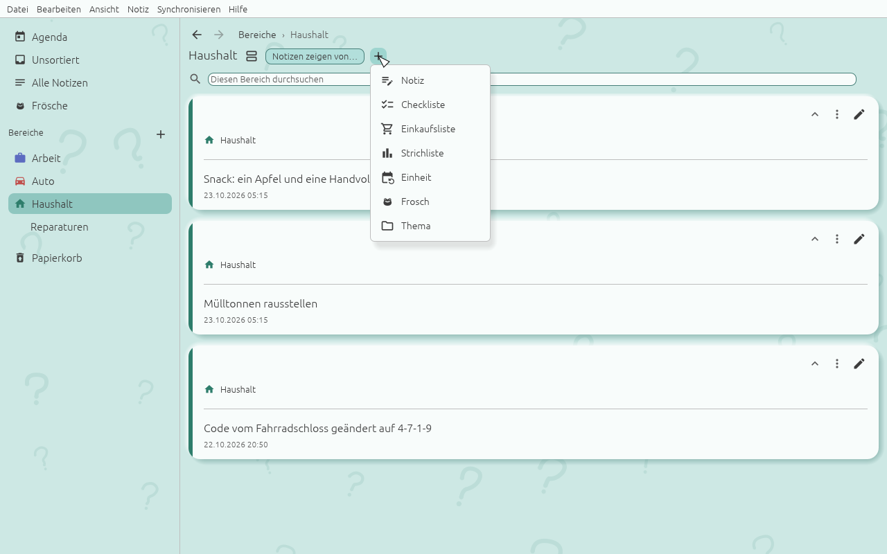
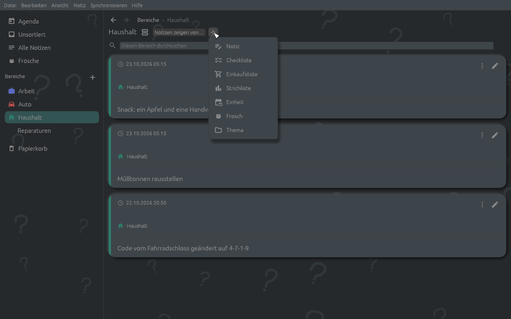
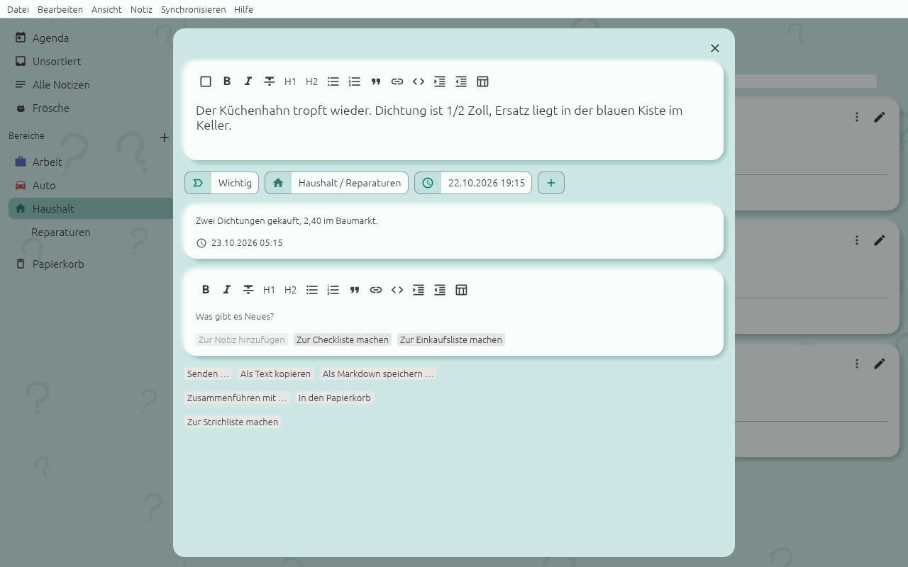
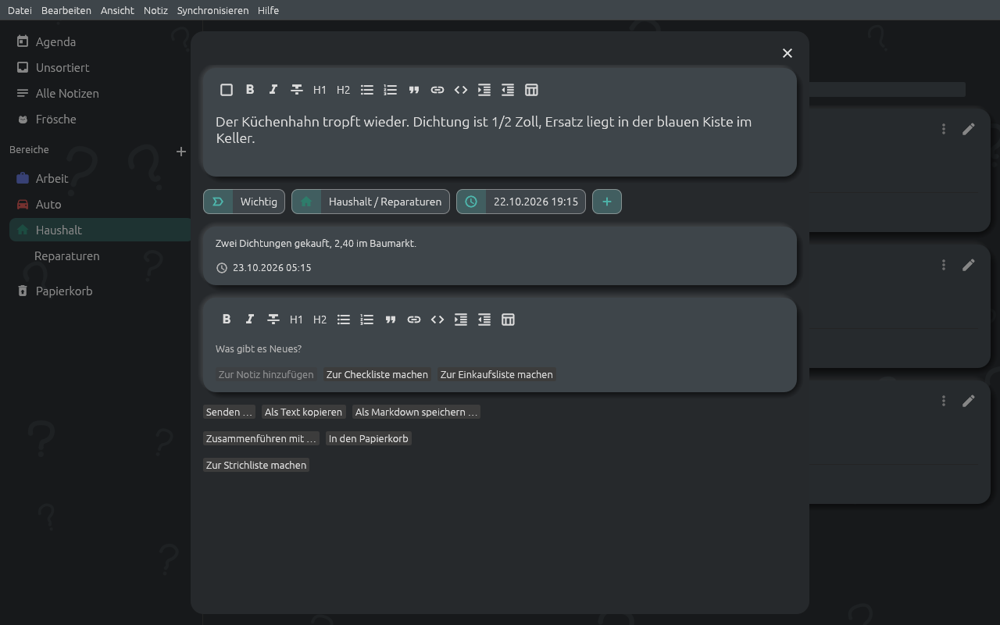
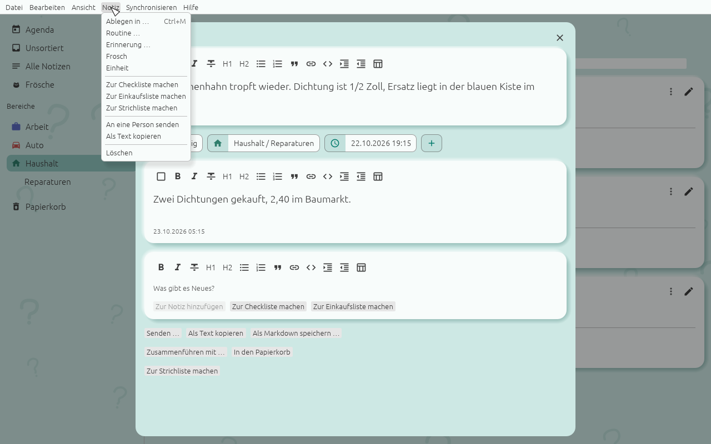
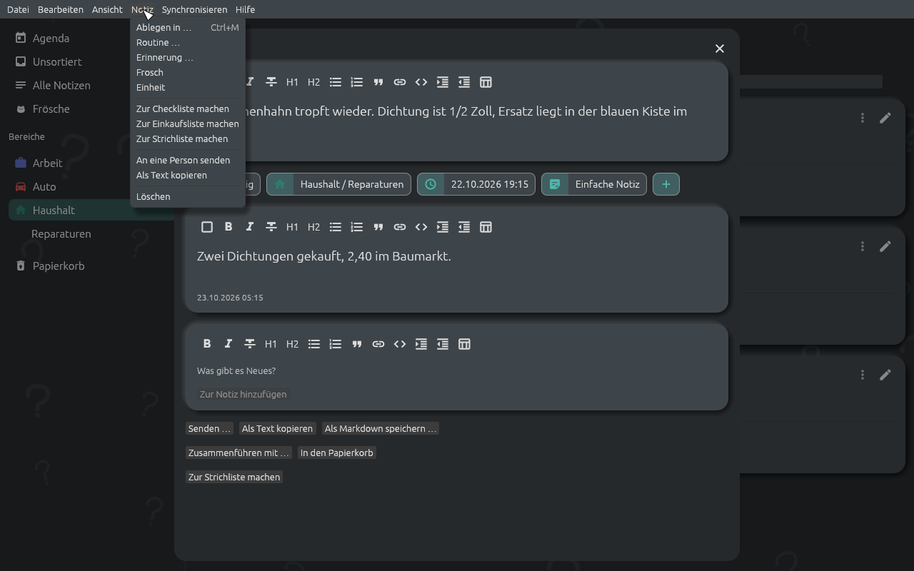
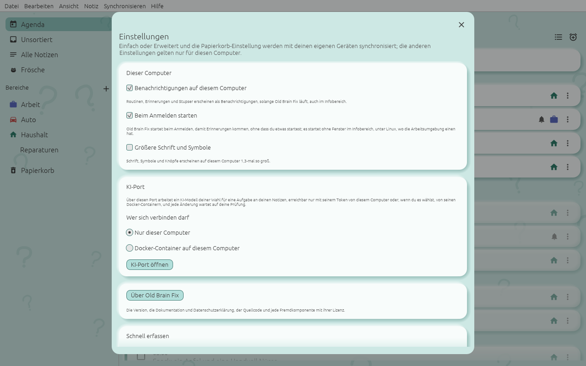
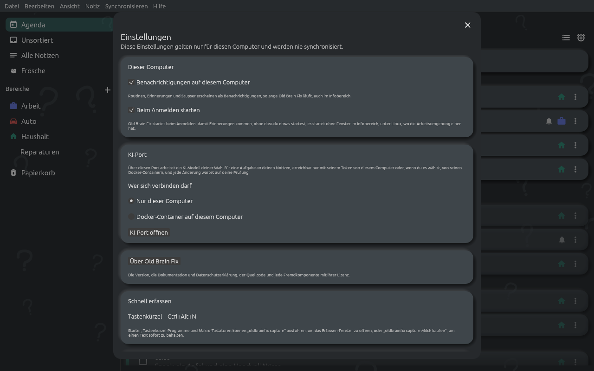

Die Desktop-App läuft unter Linux, Windows und macOS und hat dieselben Notizen, Bereiche und Routinen wie das Handy, sobald beide gekoppelt sind. Sie ist ein Fenster mit einer Menüleiste, den Orten links und der Liste daneben, über denen sich eine Notiz als Dialog öffnet, bedient mit Maus und Tastatur, mit einem Erfassen-Fenster und einer Befehlszeile, um von überall zu erfassen. Die Einstellungen gehören zu diesem Computer und werden nie abgeglichen.
Die App wird mit Homebrew, Scoop, einem .deb, einer Flatpak-Datei, einem AppImage, einem Disk-Image oder einer Zip-Datei installiert; siehe Installieren. Unter Linux schreibt oder erneuert jeder Start außerhalb des Flatpaks den Eintrag der App im Anwendungsmenü und ihr Symbol.
Der erste Start bietet dieselben drei Wahlmöglichkeiten wie das Handy: Neu bei Old Brain Fix mit der Startauswahl, Ein Gerät von mir hinzufügen und Aus einer Sicherung wiederherstellen (siehe Erste Schritte). Das Profil übernimmt Namen und Bild deiner Anmeldung am Computer, sonst den Namen des Computers. Der Desktop fragt weder nach dem Sprachmodell noch nach dem Zugriff für Alarme.
Das Fenster hat oben die Menüleiste und darunter zwei Spalten; die Grenze zwischen ihnen lässt sich ziehen.
Das „+“ von Alle Notizen, einem Bereich und einem Thema öffnet ein Menü: Notiz öffnet die Schnellnotiz, Checkliste, Einkaufsliste und Frosch fragen nach einem Namen, Strichliste und Einheit öffnen ihre Seite, und in einem Bereich legt Thema ein Thema an. Was es anlegt, wird in den gezeigten Bereich oder das gezeigte Thema abgelegt, aus Alle Notizen nirgends; Einheit, Frosch und Thema gibt es für den, der sie einrichten darf. Eine neue Checkliste oder Einkaufsliste öffnet im Notiz-Dialog, der Cursor in ihrer ersten Zeile oder ihrem Feld oben (siehe Listen, Strichlisten, Einheiten und Frösche). Das „+“ der Agenda und von Unsortiert öffnet gleich die Schnellnotiz. Solange die Liste nur die Notizen eines anderen Menschen zeigt, wird nichts angelegt. Jede Liste endet mit Platz nach ihrer letzten Karte, sodass diese ganz ins Bild rollt.


In einer Liste von Notizen wählt ein Klick eine Karte aus und klappt eine kompakte auf; ein Doppelklick oder der Stift öffnet die Notiz im Notiz-Dialog. Ein Rechtsklick auf eine Karte oder ihr ⋮ öffnet Bearbeiten, Ablegen in …, die Einträge für Checkliste mit Auf der Agenda zeigen und für Einkaufsliste (siehe Listen, Strichlisten, Einheiten und Frösche), An eine Person senden, Als Text kopieren und Als Markdown speichern …. Eine Karte, die auf einen Bereich oder ein Thema in der Seitenleiste gezogen wird, wird dort abgelegt, eine unsortierte verlässt dabei Unsortiert; Notizen im Papierkorb lassen sich nicht ziehen.
Strg-Klick (Cmd-Klick unter macOS) nimmt eine Karte zur Auswahl hinzu oder wieder heraus, und Umschalt-Klick wählt alle Karten von der zuletzt angeklickten bis zu dieser aus. Ausgewählte Karten tragen ein Häkchen und einen dickeren Rand. Wird eine von ihnen auf einen Bereich oder ein Thema gezogen, legen Ablegen in … in ihrem Rechtsklick-Menü, Notiz ▸ Ablegen in … oder Strg+M sie alle zusammen ab; der Dialog sagt, wie viele es sind. Eine Karte außerhalb der Auswahl wird allein gezogen. Esc und das Zeigen eines anderen Orts heben die Auswahl auf. In einem geteilten Bereich kann die Auswahl eines Mitglieds Notizen enthalten, die andere geschrieben haben und die nur ein Verwalter verschiebt: Sie bleiben, wo sie sind, und eine Zeile oben sagt, dass nicht jede Notiz abgelegt wurde; ihr Klick zeigt, wie viele verschoben wurden und wie viele geblieben sind.
Ein Klick auf ein Foto im Notiz-Dialog zeigt es im Vollbild. Ein Rechtsklick auf ein Foto im Notiz-Dialog oder im Vollbild öffnet Bild speichern unter …, das seine Datei dort speichert, wo du sagst, Bild kopieren, das das Bild in die Zwischenablage legt, und In anderem Programm öffnen, das es im Bildprogramm des Computers öffnet. Gespeichert und kopiert sagt nichts; schlägt eines davon fehl, sagt es eine Zeile oben im Fenster, und ein Klick darauf zeigt, warum und was zu tun ist.
Die Leiste der Agenda enthält Alle Routinen und Erinnerungen und Neue Routine oder Erinnerung.
Eine Notiz öffnet sich als Dialog über der Liste und der Seitenleiste, eine zur Zeit; die Menüleiste bleibt darüber erreichbar. Er enthält den Text mit der Formatleiste, darunter die Einstellungen der Notiz als Plaketten, dann ihre Zeilen, Fotos und Aufnahmen, ihre Strichliste und ihre Abschnitte, Zur Notiz hinzufügen und den Rest dessen, was sich mit ihr tun lässt. Sein Kreuz, Esc, Alt+Links, die Zurück-Taste der Maus und ein Klick daneben schließen ihn, und was getippt wurde, bleibt erhalten, auch ein Abschnitt in Zur Notiz hinzufügen.
Jede Plakette zeigt eine Einstellung mit Symbol und Wert, wie auf dem Handy (siehe Erfassen und sortieren): die Wichtigkeit, Bereich und Thema, Erfasst, jede Routine und Erinnerung, die Art einer Checkliste, Einkaufsliste oder Strichliste, Auf der Agenda zeigen bei einer Checkliste ohne Routine, Ticks zeigen, solange es ein Kästchen gibt, und „+“ mit Routine, Erinnerung, Frosch und Einheit für den, der sie einrichten darf. Ein Klick öffnet ihren kleinen Editor als Dialog über der Notiz; Bereich und Thema öffnet Ablegen in …, eine Routine oder Erinnerung ihren Editor. Der Routinen-Editor, die Seiten einer Strichliste, die Seite Neue Strichliste und die Seite Neue Einheit öffnen als Dialoge über dem, aus dem sie geöffnet wurden.


Ein Menü schließt sich, sobald ein Eintrag gewählt ist, mit der Maus, der Tastatur oder einem Bildschirmleser. Unter macOS gehört die Menüleiste zum Fenster, wie unter Linux und Windows, und Einstellungen … bleibt in ihrem Menü Bearbeiten.


Die Einstellungen, „Über Old Brain Fix“ und alles unter „Synchronisieren“ öffnen sich als Dialoge über dem Fenster; die Liste bleibt darunter, wo sie war. Das Kreuz oben rechts, Esc oder ein Klick neben den Dialog schließt ihn. Ein Dialog, der aus einem anderen geöffnet wurde, etwa „Über Old Brain Fix“ aus den Einstellungen und die Lizenzen daraus, hat oben links einen Pfeil zurück zu diesem. Solange ein Dialog offen ist, erscheint eine Zeile, die etwas meldet, oben in ihm.
Wo das Handy mit einer Wischgeste zurückgeht, nimmt der Desktop Tasten und die Seitentasten der Maus. Alt+Links und Alt+Rechts ruhen, solange der Cursor in einem Textfeld steht; die Maustasten wirken immer.
Die App zeigt ein Symbol im Infobereich: unter Windows im Infobereich der Taskleiste, unter macOS in der Menüleiste und unter Linux, wo die Arbeitsumgebung einen Infobereich hat: KDE, Xfce, Cinnamon und GNOME mit der Erweiterung AppIndicator. Ein Klick auf das Symbol öffnet das Fenster, unter macOS sein Menü; das Menü, unter Windows und Linux mit der rechten Maustaste, enthält Old Brain Fix öffnen, Notiz erfassen und Beenden. Schließt du das Fenster, läuft die App im Infobereich weiter, mit ihren Benachrichtigungen, ihrem Tastenkürzel, dem Abgleich mit gekoppelten Geräten und der wöchentlichen Sicherung; Beenden beendet sie.
Linux ohne Infobereich hat kein Symbol. Dort beendet das Schließen des Fensters die App, und mit ihr die Benachrichtigungen und das Tastenkürzel, bis sie wieder gestartet wird.
Einstellungen, „Dieser Computer“, Beim Anmelden starten ist an, solange es nicht abgeschaltet wird. Es schreibt unter Linux einen Autostart-Eintrag (im Flatpak über das Hintergrund-Portal der Arbeitsumgebung), unter macOS einen LaunchAgent und unter Windows einen Run-Eintrag für deinen Benutzer. Beim Anmelden startet die App ohne Fenster in den Infobereich; unter Linux ohne Infobereich öffnet sie das Fenster.
Die App läuft einmal pro Benutzer. Ein zweiter Start, aus dem Menü oder per Befehl, gibt seinen Wunsch an die laufende App weiter: Ihr Fenster öffnet sich, oder ihr Erfassen-Fenster.


Das Tastenkürzel, Strg+Alt+N, solange nicht geändert, öffnet das Fenster „Notiz erfassen“ über
allen anderen Fenstern, auch während die App ohne ihr Fenster im Infobereich läuft.
Notiz erfassen im Infobereich und der Befehl oldbrainfix capture
öffnen es ebenfalls. Es nimmt Text, eine Sprachaufnahme und die Zwischenablage, bietet wie die
Schnellnotiz im Fenster Zum vollen Editor und, was die Einstellungen unter „Schnellnotiz“
eingeschaltet haben, und fragt nie etwas: Enter speichert die Notiz mit einem
Stupser in 1 Std., und Esc behält Getipptes genauso (siehe
Erfassen und
sortieren).
oldbrainfix öffnet das Fenster.oldbrainfix capture öffnet das Erfassen-Fenster.oldbrainfix capture Milch kaufen behält „Milch kaufen“ als unsortierte Notiz mit einem Stupser in 1 Std., ohne Fenster. Nach -- ist jedes Wort Text, auch eines, das mit „-“ beginnt.oldbrainfix capture - behält, was über die Standardeingabe kommt.oldbrainfix import DATEI importiert ein Bündel und gibt aus, was hereinkam.oldbrainfix open DATEI zeigt eine gesendete Notiz im Fenster, zum Annehmen oder Ablehnen; eine Profilkartendatei fügt die Person hinzu und öffnet ihr Profil.oldbrainfix --help gibt die Bedienung aus.Ein Erfassen oder ein Import geht über die laufende App, die den Stupser sofort plant; läuft keine, schreibt der Befehl die Notiz selbst, und der Stupser kommt, sobald die App läuft. Ein gelungenes Erfassen gibt nichts aus. Der Rückgabewert ist 0, wenn es geklappt hat, 1, wenn die Notiz nicht behalten oder das Bündel nicht importiert werden konnte, und 2 bei falschen Argumenten oder wenn nichts zu erfassen war. Starter, Tastenkürzel-Programme und Makro-Tastaturen können diese Befehle ausführen, auch wo die Arbeitsumgebung kein Tastenkürzel anbietet.
.obfsync), das auf das Fenster gezogen wird, wird importiert; eine gesendete Notiz (.oldbrain) wird zum Annehmen oder Ablehnen gezeigt; eine Profilkartendatei (.obfcard) fügt die Person hinzu und öffnet ihr Profil.Die Alarme der Routinen und Erinnerungen, der Stupser, der Änderungs-Stupser und „Verpasst, während Old Brain Fix nicht lief“ kommen als Benachrichtigungen des Systems, solange die App läuft. Der Schalter „Benachrichtigungen auf diesem Computer“ in den Einstellungen schaltet sie ab. Ein Klick auf eine Benachrichtigung öffnet das Fenster: beim Stupser bei „Unsortiert“; beim Änderungs-Stupser einen Speichern-Dialog für jeden wartenden Menschen.
Die App spielt den Alarmton selbst ab, und ein eskalierter Alarm macht die Benachrichtigung dringend; einen Vollbild-Alarm gibt es nicht (siehe Routinen, Erinnerungen und die Agenda).
Transkripte brauchen das Sprachmodell, das unter Einstellungen, Sprachmodell gewählt und heruntergeladen oder aus einer eigenen Datei genommen wird, wie auf dem Handy. Aufnahmen ohne Transkript, auch solche vom Handy, die dort nicht transkribiert wurden, folgen, sobald es da ist. Fototexte brauchen keinen Download: Die Texterkennung ist Teil der App. Beides läuft auf diesem Computer, eine Aufnahme oder ein Foto nach dem anderen, solange die App läuft (siehe Formatierter Text, Transkripte und Fototexte).
Jetzt synchronisieren im Menü „Synchronisieren“ öffnet „Synchronisieren“. Es zeigt den Code dieses Computers, als QR-Code und als Text mit seiner PIN, damit das Handy ihn scannt, solange es offen ist; nach einem Handy, das noch nicht gekoppelt ist, wird erst gefragt, Vertrauen oder Ablehnen. Ist ein geteilter Ordner gewählt, gleicht Jetzt synchronisieren auch sofort über ihn ab. Gerät koppeln zeigt denselben Code und das Feld Kopplungscode, in das du einen Code, den das Handy zeigt, tippst oder einfügst und mit Mit diesem Code synchronisieren beitrittst. Gekoppelte Geräte im selben Netz gleichen sich danach von selbst ab, solange die App läuft, auch im Infobereich; der geteilte Ordner wird alle halbe Minute abgeglichen. Zum Koppeln, zum geteilten Ordner, zu Bündeln und Konflikten siehe Teilen und abgleichen.
Importieren … im Menü „Datei“ öffnet den Dialog „Import“: Ein Ordner … macht Notizen aus einem Ordner mit Markdown- oder Textdateien und Google Keep … aus einem Export von Keep aus Google Takeout (siehe Notizen aus einer anderen App importieren).
Nur der Desktop hat den KI-Port. Einstellungen, KI-Port öffnen lässt ein KI-Modell deiner Wahl für eine Aufgabe an deinen Notizen arbeiten, erreichbar nur von diesem Computer mit seinem Token. Der Abgleich wartet, solange der Port offen ist und bis zur Prüfung. Fertig, prüfen schließt den Port und listet jede Änderung mit Vorher und Nachher auf, um sie als Ganzes anzunehmen oder abzulehnen (siehe Die KI-Aufgabe).